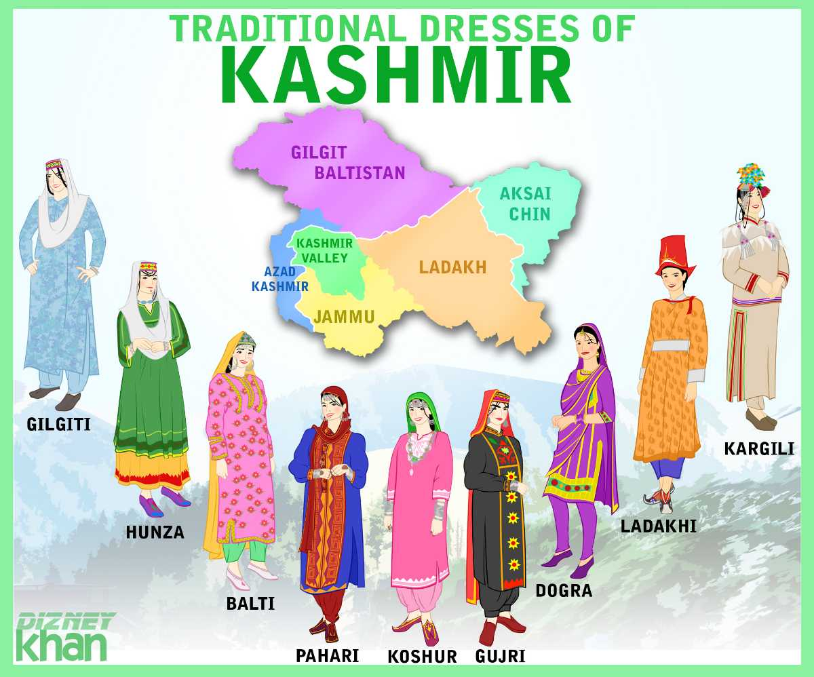

JAMMU KASHMIR

Jammu and Kashmir is the northernmost state of the Union of India. The state shares international border with China and Afghanistan in the north, Tibet in the east and Pakistan in the west. The states of Punjab and Himachal Pradesh form its southern border. Major parts of the Jammu & Kashmir state represent high and rugged mountainous terrain.Jammu & Kashmir is situated between 32°17' and 36°58' north latitude and 73°26' and 83°30' east longitude. It is located in the extreme north of the country. It is bounded on north by China, on east by Tibet, on south by Himachal Pradesh, Punjab and on west by Pakistan. Geographically this state is divided into four zones - the mountainous and semi-mountainous plain known as Kandi belt, hills including Siwalik ranges, mountains of Kashmir valley and Pir Pangal range and Tibetan tract of Ladakh and Kargil.This state has a number of lakes, rivers, rivulets and glacial regions. The important rivers of this state are Indus, Chenab and Sutlej (Jhelum). There are extreme variations in climate in the state, due to its location and topography. The temperature of this state varies spatially. Leh is coldest and Jammu is the hottest In winter night temperatures go down below zero and very often experience snowfall.
Famouse Spots In Kashmir :
click hereTraditional Dress
click here for more

The Kashmiri attire for women is completely different from Indian attire. In summer season the Kashmiri woman usually wears Salwar-kameez , Suits or Abaya, Burqa along with a head scarf. In winter they usually worn a Pheran along with shawls. In Kashmir, Muslim and Pandit women wear the Kasaba in a unique style.Kashmiri traditional dresses are a reflection of the Kashmir rich culture and heritage. The traditional dress worn by Kashmiri people is unique and different from the formal dresses in other parts of the country. Due to cold climate, mostly wool or silk garments are famous among the Kashmiri population. The Kashmiri men usually worn Kurta-salwar dress which resembles the Pathani costume. Women wear Salwar-kameez along with a dupatta, and they usually cover their head with a headscarf.
Short Overview in Kashmir
Map